Welcome to
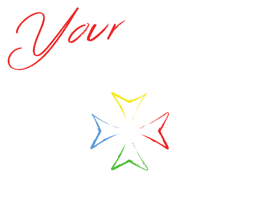
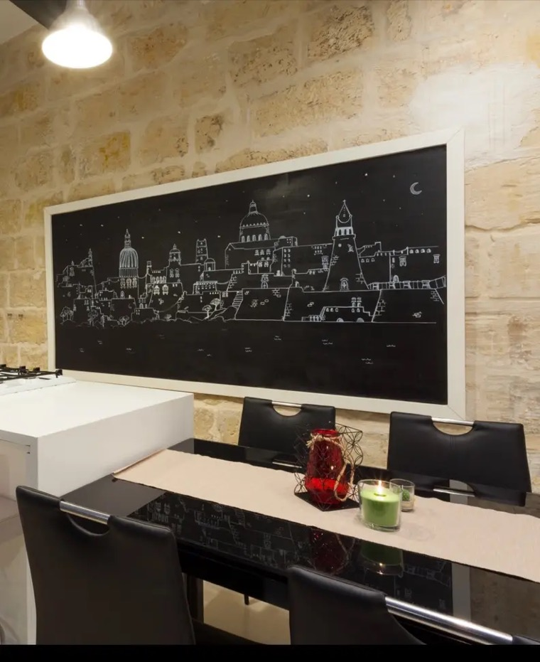
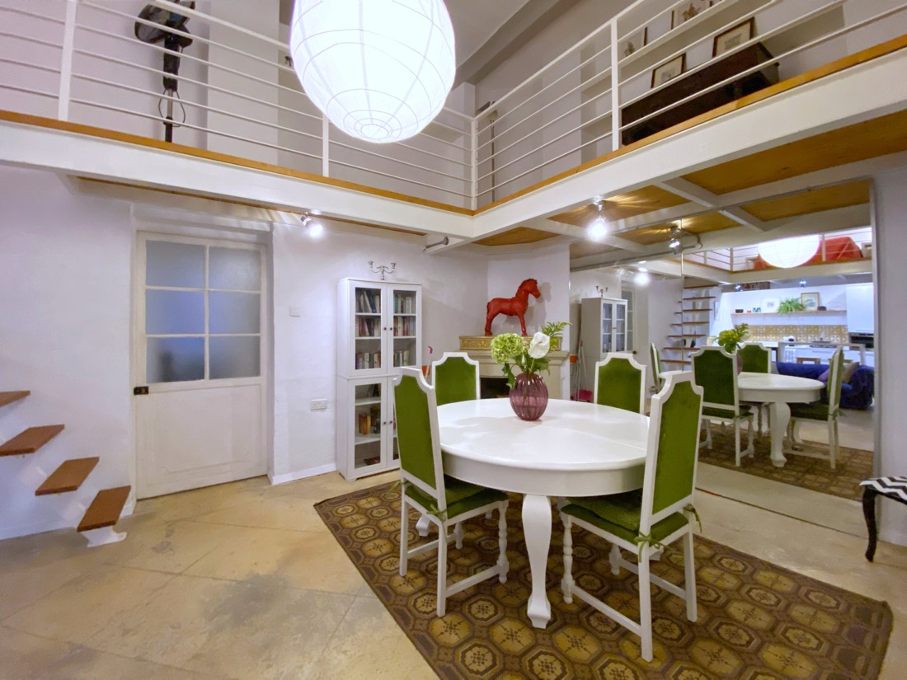
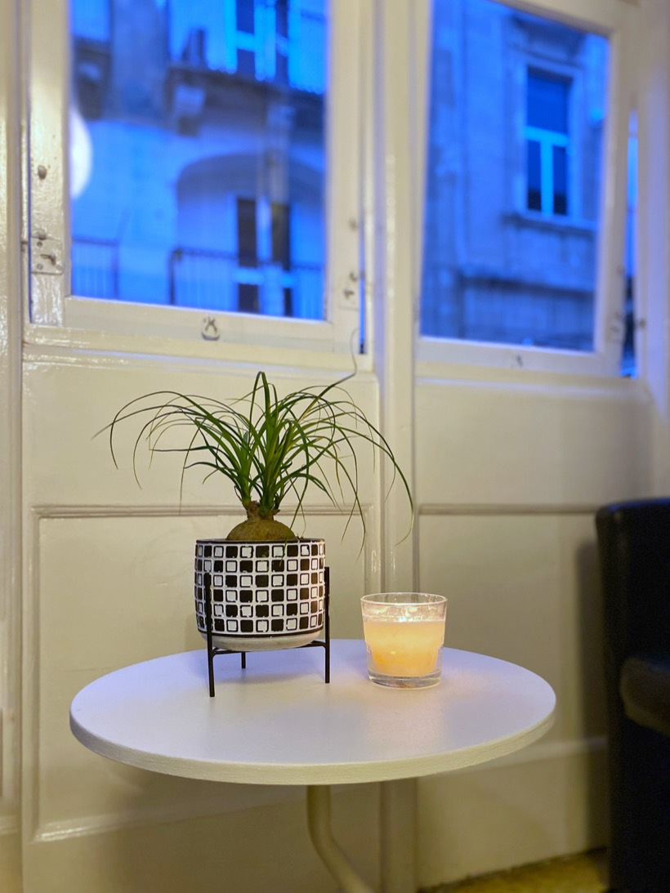
Enjoy your stay!
34, Triq Il-Konservatorju, FlorianaMeet your host
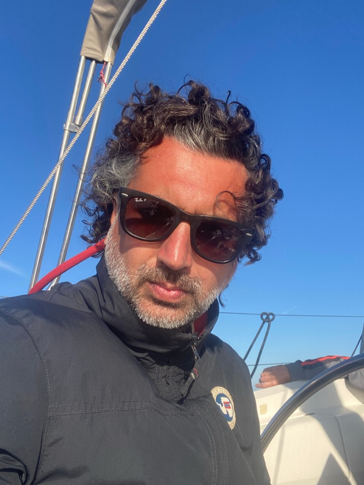
Dario 10+ years hosting “For me, hospitality has never been just a profession — it’s a calling.” Read his storyFind us
Map tiles by CARTO · © OpenStreetMap contributors
Meet your host
For me, hospitality has never been just a profession — it is a calling. Over the past decade, I have had the privilege of opening my doors and my heart to travellers from all walks of life, and every single encounter has enriched my journey.
I truly believe that true hospitality lies in the art of connection. It is about creating a sanctuary of warmth and comfort where language barriers dissolve, and every guest feels instantly valued, cared for, and completely at home.
No matter how far you have travelled, my door is always open, and you are always welcome.
Enjoy your stay!
I'll meet you at check-in to welcome you and share tips on what to do and visit, so you can perfectly organise your island getaway.
If I'm not there to say goodbye, no worries — just:
Dress in layers — you often move quickly between warm and cool spots, so it's best to be ready for both.
Always protect yourself from the sun. The pleasant breeze hides how strong the rays are, so use sunscreen.
Look both ways: traffic drives on the left, the opposite of most of continental Europe.
Malta is very safe and you can get around easily speaking English.
Scan to connect — or use the details below.
Point your camera here to join
Network name
Your Apartment
Password
yourapartment85
Thanks to our extenders you'll stay connected in the courtyards and on the terraces too.
There's no private parking, but you can park for free on the street. Look for a spot with a 2h30 time limit.
The temperature can be adjusted in every room using the air conditioning.
We provide an express laundry service for an additional price, starting from €15.
Request laundryTo help us keep the space clean, please use the recycling instructions and trash bags provided in the kitchen.
View sorting guide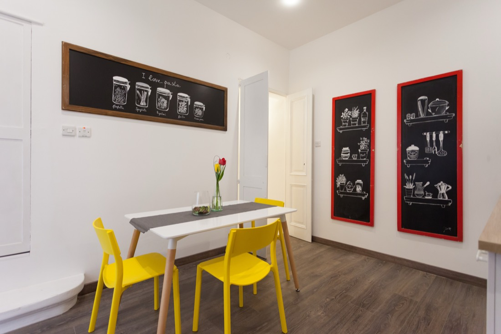
Make yourself completely at home.
The kitchen is fully equipped for everything from a quick breakfast to a proper dinner — help yourself to whatever you need.
A capsule coffee machine is ready to go, and we keep tea, coffee and sugar stocked for you — start your morning just the way you like it.
Send a message to the host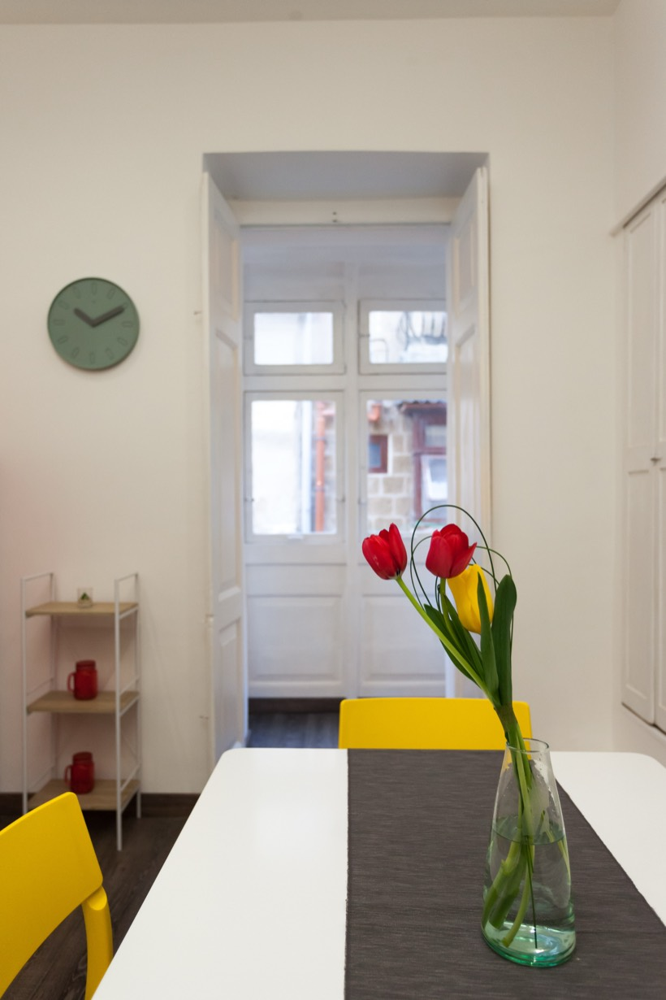
A first-aid and emergency kit is available in each apartment.
Uber, Bolt and eCabs all operate across the island.
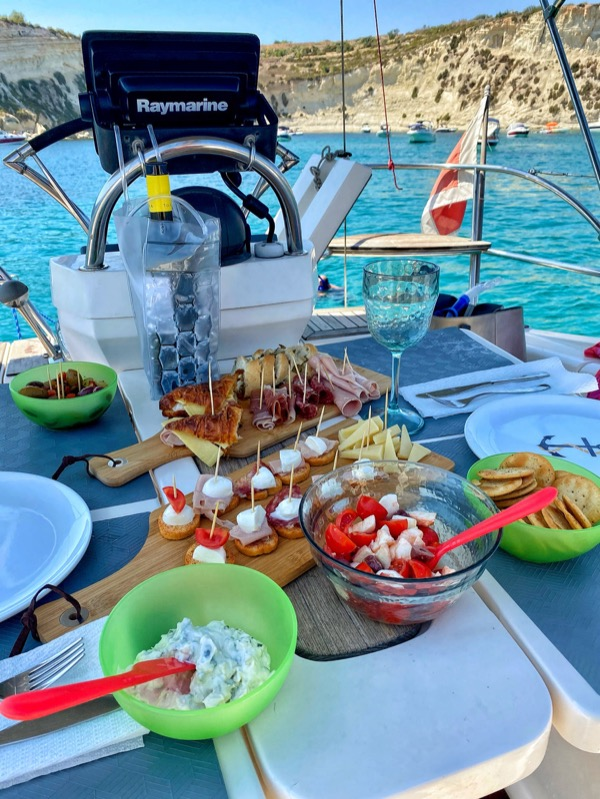
Spend a day with us aboard Ela, Dario's own sailboat, gliding along the Maltese coast and sharing a traditional Italian aperitif on deck.
Book your sailing day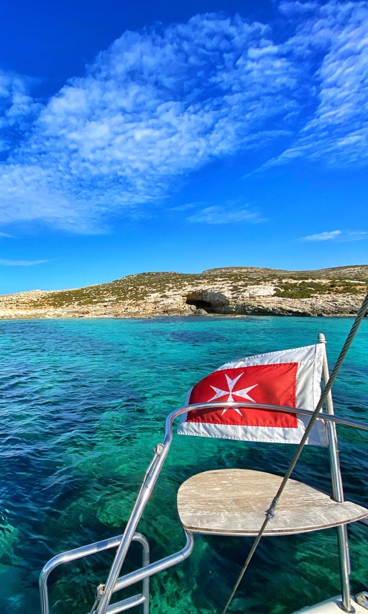
A tiny island between Malta and Gozo, named after the cumin seed, with crystal-clear turquoise water and only two permanent residents.
View on map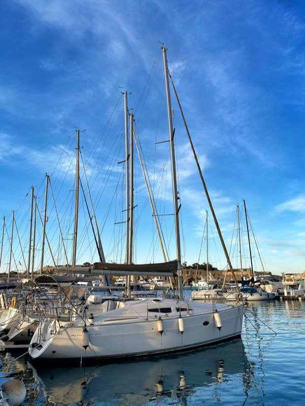
A natural swimming bay on the Delimara Peninsula, popular for snorkelling, with a small cave on its western end.
View on map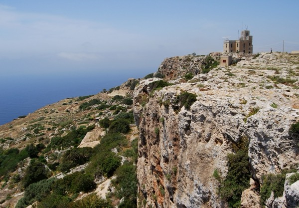
Malta's highest point — dramatic limestone cliffs dropping into the sea, with sweeping views over the island of Filfla. Best at sunset.
View on map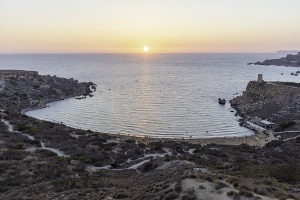
A tucked-away sandy cove on the north-west coast — fewer crowds, golden sunsets, framed by red-stone cliffs.
View on map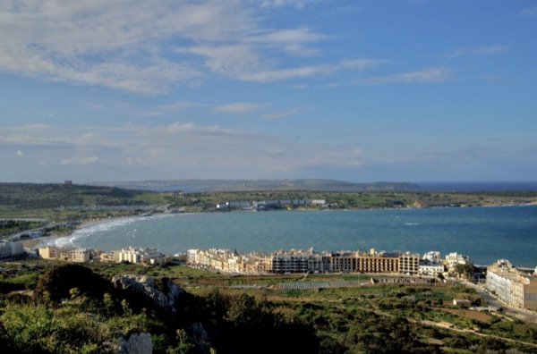
Malta's largest sandy beach, on the north of the island — gently sloping, family-friendly, framed by hills.
View on mapThe capital and a UNESCO World Heritage site, famed for its Baroque architecture, grid streets and the fortifications of the Knights of St. John.
View on map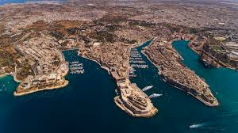
Vittoriosa, Senglea and Cospicua — historic fortified towns across the Grand Harbour showing a quieter, authentic side of Maltese life.
View on map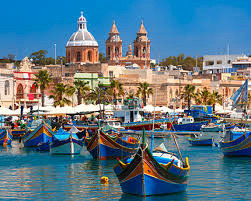
The traditional fishing village, known for its colourful luzzu boats and bustling Sunday market — a fantastic spot for fresh seafood.
View on mapThe ancient capital, the "Silent City", known for its medieval alleys and panoramic views from the bastions.
View on mapIn Valletta, with an opulent interior and Caravaggio masterpieces, including The Beheading of Saint John the Baptist.
View on map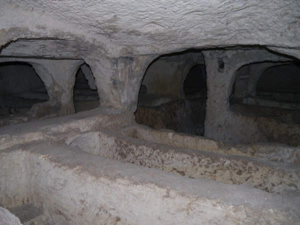
An early Christian underground burial complex in Rabat — atmospheric tombs and chambers dating back to Roman times.
View on map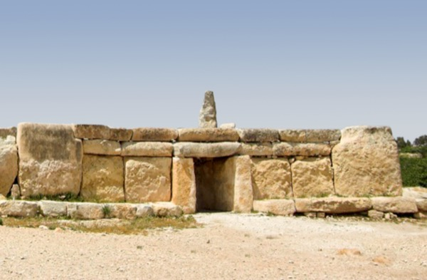
A prehistoric megalithic temple complex on the southern coast — one of the oldest free-standing monuments in the world, UNESCO World Heritage.
View on map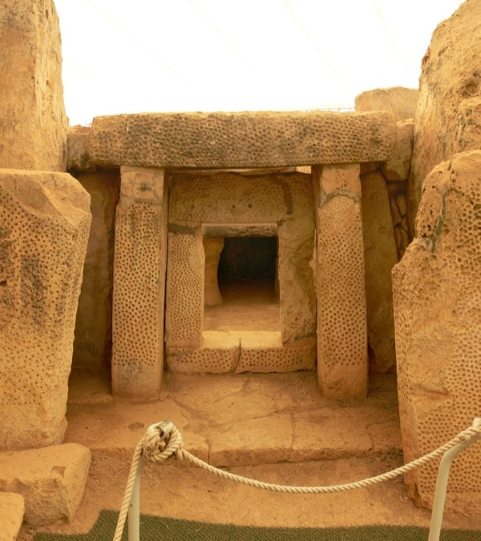
A sister megalithic complex just 500 m down the slope from Ħaġar Qim, famous for its precise astronomical alignment with the equinox sunrise.
View on map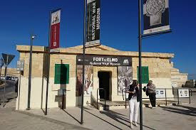
At Fort St. Elmo — a thorough look at Malta's military history, World War Two and the awarding of the George Cross.
View on map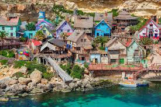
Originally the set of the 1980 film with Robin Williams; today a quirky attraction with boat rides and costumed characters.
View on map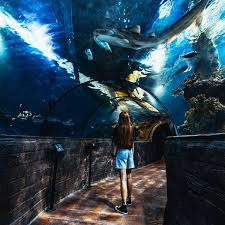
In Qawra, the island's largest aquarium, shaped like a starfish along the waterfront and home to many marine species.
View on mapA few of our favourites. Tap any spot for directions.
The essentials, all within a short walk. Tap a card for directions.
Safe travels — and come back soon!
We always do our best to accommodate early check-in whenever possible. If your room isn't quite ready, we'll help you with your luggage so you can start exploring the city right away.
Yes, absolutely. We provide high-speed Wi-Fi in every room and, thanks to our extenders, you'll stay connected in the courtyards and on the terraces too.
About a 15-minute walk away there's a SPAR, open 24/7, seven days a week.
The nearest pharmacy is on the next street over, just around the corner.
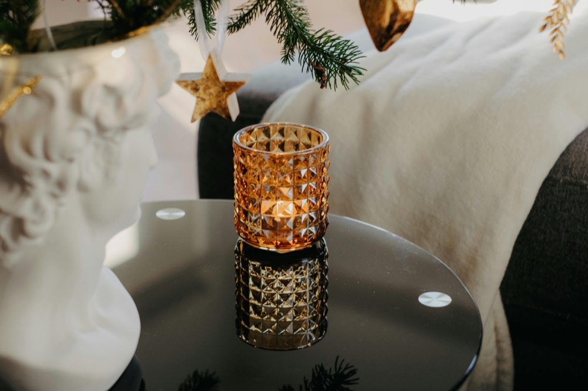
"Excellent location — we could walk everywhere. The house was beautiful and very pleasing to the eye, the kind of place where you genuinely enjoy spending time inside. The host, Dario, is incredibly kind and helpful."
"A fantastic place! Excellent communication with the host, who responded immediately, and we could leave our luggage until the evening of our departure. Delicious coffee and tea were provided too. Truly fantastic."
If you enjoyed your stay with us, please let us know by leaving a review on Booking.
Thank you!